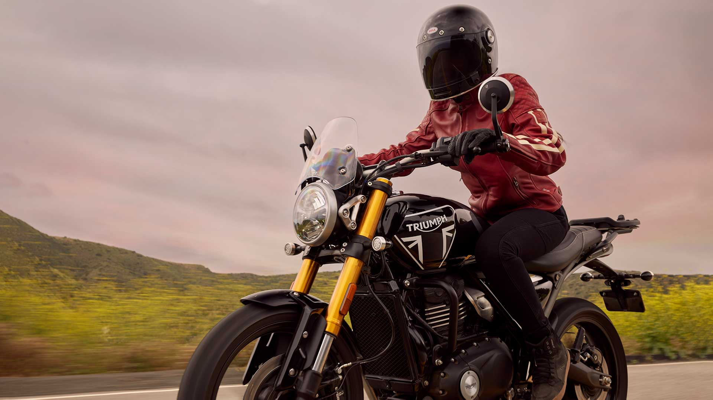

A selection of more than 25 Triumph Genuine accessories are available, adding even more versatility and style to the Speed 400. Designed by the same engineers that created the Speed 400, and with the same two-year unlimited mileage warranty, you can rest assured that each part will fit and suit your new Speed 400 perfectly.
Choose from a range of parts that will make your Speed 400 just how you want it. Direct replacement bullet indicators give a subtle new look and a touch of class with their satin black bodies and machined aluminium bezels. Or maybe you want to restyle the tank with different kneepads? A quilted seat with a stitched finish makes a statement and brings a little luxury to longer rides.
A twin silencer is yet another styling option, bringing a fresh new look with a familiar soundtrack.
A full range of Speed 400-specific luggage has been created to add a little practicality to the fun. The perfect bike for commuting with touring capability, equipping the Speed 400 to cope with your cargo really couldn’t be easier.
Choose from rugged pannier or rigid and semi-rigid top boxes, each with their own bespoke mounting system or, for those who prefer to travel light, a simple luggage rack, nylon tank or roll bag could be the perfect option.
Keeping you and your Speed 400 protected from the elements is well taken care of. A screen with a dedicated fitting kit is available to deflect the wind to reduce rider fatigue on longer rides. Easy to fit, and styled to suit, this is a must-have addition for distance riders.
To keep the Speed 400 out of harm’s way on rougher roads, an aluminium sump guard, radiator guard and a headlight grille, that comes with its own bezel for easy fitment, all offer excellent protection from stone chips and debris. All-weather riders might wish to add the mud splash kit that consists of front and rear mudguard extenders and a rear hugger.
Upper and lower engine bars are also available — these provide superb protection against drops and spills, an essential add-on for the city rider.
Riumph's 30-35 litre capacity, Semi Rigid Top Box, has a 5kg payload and plenty of room to accommodate one full face helmet. Having a reinforced base with twin zips (expandable to the full 35 litre capacity), and a quick release mounting mechanism, the Triumph Semi Rigid Top Box is the perfect commuting and touring companion.
Triumph's branded Roll Bag is fully waterproof, having a reinforced base, roll-top seal and welded seams, ensuring your content stays dry. The roll bag features a dual purpose compression strap, carry handles, and has an impressive 30 litre capacity and 3kg payload.
He Triumph 20 litre capacity single left hand mounted rugged pannier, is made from modern materials with contemporary, rugged styling. Includes a key lockable mounting system for extra security. Black steel mounting rail included. 5kg payload.
Triumph branded, modern, strap mounted Tank Bag. With an 8.5 litre capacity, there is also the space to hold a mobile phone up to 153x82mm with touch screen functionality. 3kg payload.